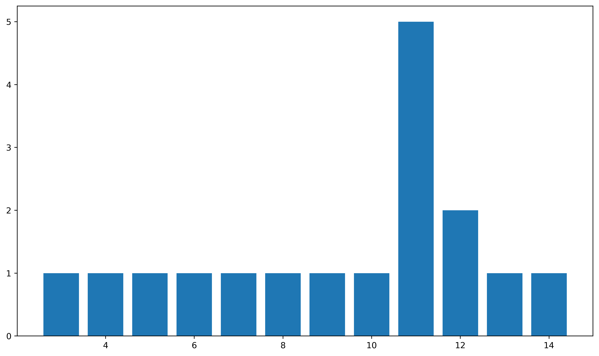
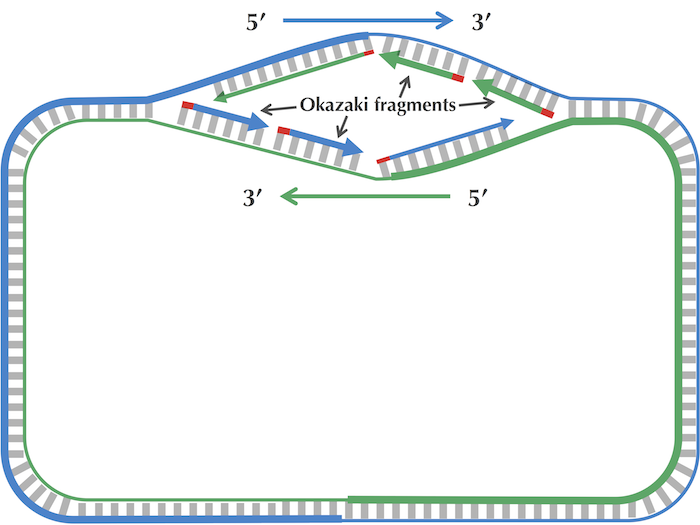
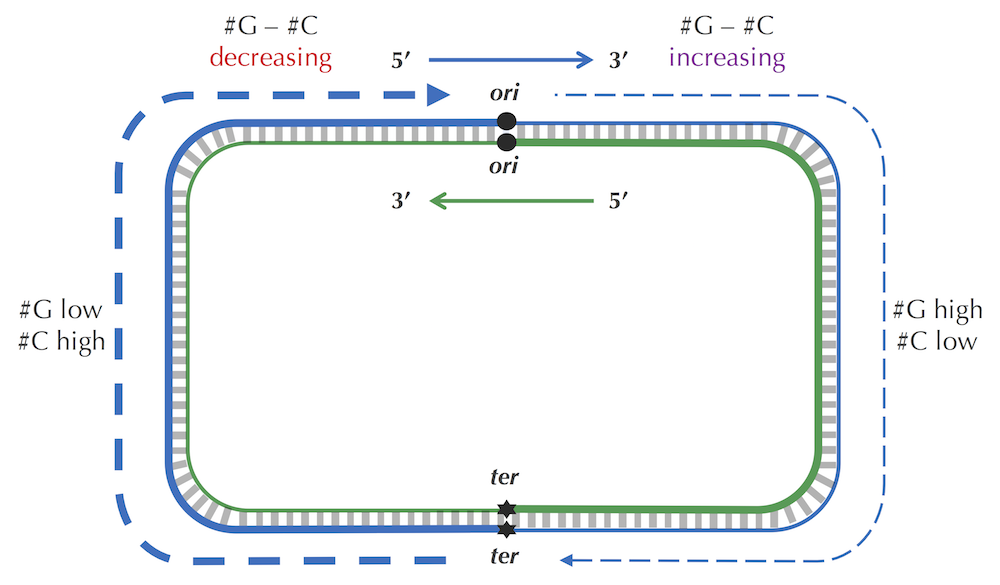
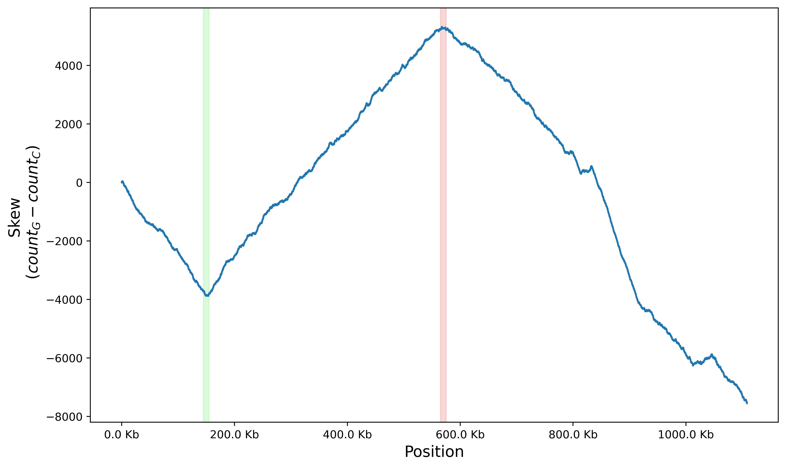

# Load genome
genome_fp = "data/Vibrio_cholerae.txt"
with open(genome_fp, "r") as fh:
genome = fh.read()
# Compute length
genome_length = len(genome)
# Compute base frequencies
base_freqs = {base: genome.count(base) for base in set(genome)}
# Compute GC content
gc_content = round((base_freqs['G'] + base_freqs['C']) / genome_length, 2)The Origin of Replication
The origin of replication (ori) is a specific DNA sequence at which DNA replication begins. It is the genomic region where the cellular machinery assembles and starts to synthesize new DNA strands. Due to its importance, there are experimental methods to elucidate the position of the ori-site, although this process takes time, effort, and expertise.
In recent years, 2nd- and 3rd-generation sequencing platforms have drastically reduced the time and cost to assemble draft genomes. Short sequencing reads allows for good genome depth while long reads reduce the uncertainty when building contigs from shorter sequences by increasing coverage. As a computational biologist, I would want to leverage this fact by finding ways to amortize the vast amounts of genomes published online.
Going back to the problem of ori finding, can we build heuristics for finding this region using only the genome sequence as input? We will dive into the ideas from Compeau’s and Pevzner’s book entitled Bioinformatics Algorithms: An Active Learing Approach and implement the algorithms in code.
Genome Dataset
The goal is to develop heuristics that can be used to find the ori of bacterial genomes from sequence data alone. I will be using the Vibrio cholera genome as an example. First, let’s explore the properties of the genome by loading it into memory and computing a few properties such as length, base composition, and GC content.
Genome length: 1108250
Base counts: {'T': 294711, 'G': 256024, 'C': 263573, 'A': 293942}
GC content: 47.00%Expected K-mer Distribution
If we were to assume that the occurrence of DNA bases are uniformly distributed across a genome, the probability of observing a particular nucleotide at any position is given as:
\[ P(A) = P(T) = P(G) = P(G) = \frac{1}{4} \]
Under this model, the occurrence of nucleotide bases are assumed to be independent. Hence the probability of a sequence of k bases is simply the product of probabilities of each base:
\[ P(\text{k-mer}) = (\frac{1}{4})^k \]
We can then compute the expected frequncy of the k-mer using the formula:
\[ E = (L-k+1) \times (\frac{1}{4})^k \]
L = genome length
Example
How many ATGCG substrings are expected to occur in the V. cholerae genome?
\[ E = (1108250 - 5 + 1) \times (\frac{1}{4})^5 = 1082 \]
Under the null distribution, we expect any 5-mer to occur 1082 times.
Frequent Words
In order to initate replication, DNA polymerase must somehow recognize and bind to the ori. This interaction is mediated by motifs, DNA sequences that have a higher affinity towards the binding domain of proteins. We can start to identify these motifs by finding the most frequent substrings of length k.
def most_frequent_kmer(genome: str, k: int):
"""Compute k-mer frequencies and return k-mer set with the highest counts"""
L = len(genome)
# Compute frequncies
kmer_counts = {}
for i in range(L-k+1):
kmer = genome[i:i+k]
if kmer in kmer_counts:
kmer_counts[kmer] += 1
else:
kmer_counts[kmer] = 1
# Compute maximum count
max_count = max(kmer_counts.values())
# Retain k-mers with counts equal to max_count
max_kmers = []
for kmer, count in kmer_counts.items():
if count == max_count:
max_kmers.append(kmer)
return max_kmers
At \(k = 11\), we find 5 most-frequent k-mers. Is this result surprising? Let’s first check the sequences of the 11-mers.
shape: (5, 2)
| n | sequence |
|---|---|
| i64 | str |
| 1 | "AGGCGTTTGTT" |
| 2 | "GGGACTGGAAA" |
| 3 | "GGACTGGAAAC" |
| 4 | "GACTGGAAACG" |
| 5 | "ACTGGAAACGC" |
Sequences of the most frequent 11-mers
Notice that there is substantial overlap between the 2nd and 3rd 11-mers when we shift the 3rd 11-mer one position to the right. Do the same for the other 11-mers (except for the first one) until the AAA subregions align:
GGGACTGGAAA
GGACTGGAAAC
GACTGGAAACG
ACTGGAAACGCThe ACTGGAAA 8-mer seems like a good candidate for the ori binding motif for V. cholerae.
Asymmetry of Replication
DNA consists of two complementary strands that run in opposite (antiparallel) directions. One runs in the \(5' \to 3'\) (leading strand) direction while the other runs in the \(3' \to 5'\) (lagging strand) direction. Since DNA polymerase can only add nucleotides in the \(5' \to 3'\) direction, synthesis on the lagging strand is fragmented and discontinuous. This phenomenon leads to the formation of small gaps called Okazaki fragments.

The transient single-stranded state of the lagging strand makes it unstable and more prone to mutation. It has been empirically confirmed that mutation rates are slightly higher for the lagging strand and this has been attributed to the spontaneous conversion of cytosine (C) to thymine (T), a phenomenon known as deamination.
As we move along the genome, we will observe a change in relative GC content. The frequency of cytosine will decrease in the forward half-strand due to deamination and increase in the reverse half-strand (Figure 3).

We capture this information by keeping track of the running difference betwee the total counts of G and C. We then visualize the results in a skew diagram. Let’s plot the skew diagram for V. cholerae
import numpy as np
def skew(genome: str) -> np.array:
"""Compute the GC skew of a sequence"""
L = len(genome)
skew = np.zeros(genome_length+1)
for pos, base in enumerate(genome, start=1):
if base == "G":
skew[pos] = skew[pos-1] + 1
elif base == "C":
skew[pos] = skew[pos-1] - 1
else:
skew[pos] = skew[pos-1]
return skew
As illustrated in Figure 3, the part of the graph where the skew transitions from decreasing to increasing is the ori (highlighted in green). The part where the skew goes from increasing to decreasing is the ter (highlighted in red), the region where replication stops or terminates.